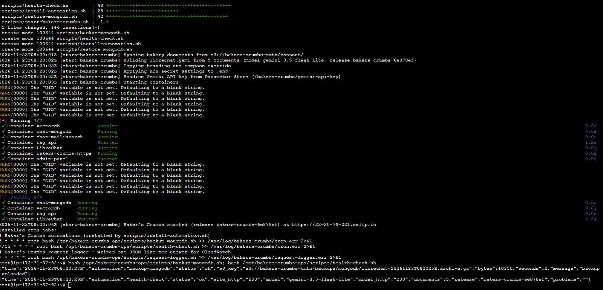
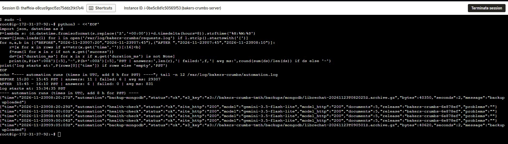
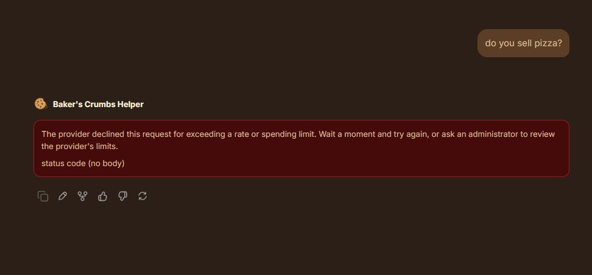
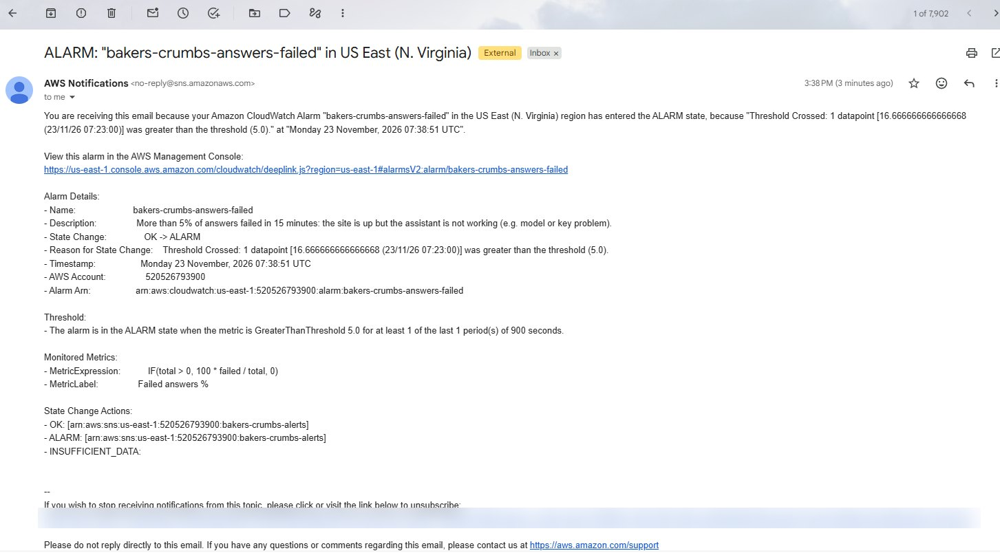
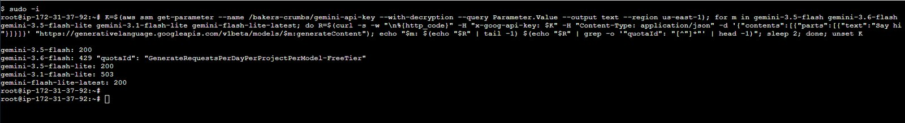
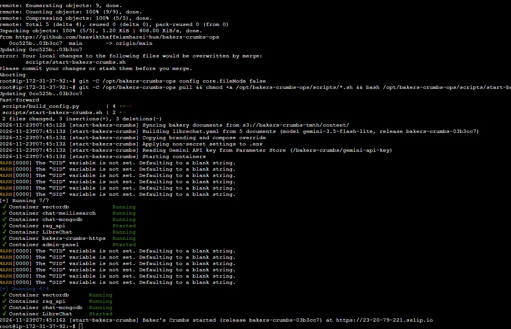
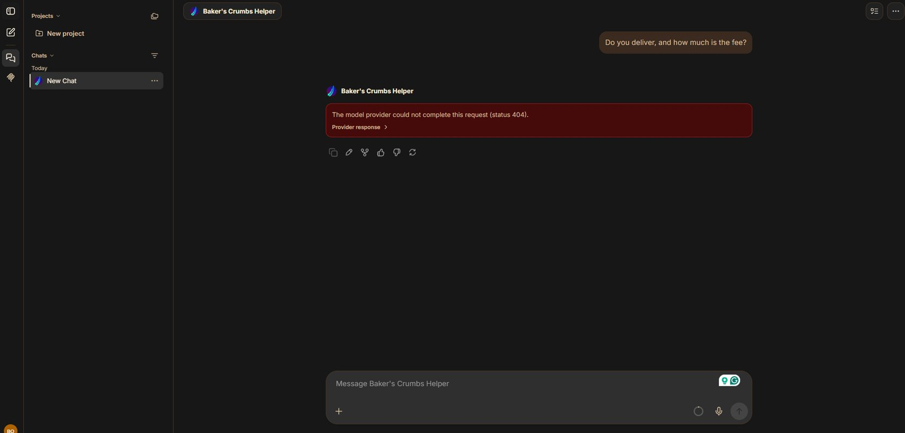
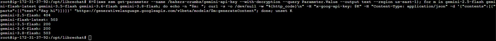

Automation and the incident
Two automations
| Automation | Schedule | What it does | Runs with nobody touching it (UTC) |
|---|---|---|---|
1. Database backup: backup-mongodb.sh | Every hour at :05 (cron) | Dumps MongoDB, uploads to S3 (kept 7 days), logs one JSON line | 23 Nov 2026 17:05:03 PST (40,620 bytes, ok) and 18:05:03 PST (40,105 bytes, ok) First run 16:20:27 was started by hand to test it. |
2. Health check: health-check.sh | Every 15 minutes (cron) | Checks the HTTPS site, that the Gemini model exists for our key, and that the S3 documents are present; publishes HealthCheckOK to CloudWatch (alarm emails if it fails or stops) | 23 Nov 2026 16:30:03, 16:45:04 and 17:00:04 PST, all ok (site 200, model 200, 5 documents) First run 16:20:29 was started by hand to test it. |
Both are in the GitHub repository with deployment steps in its README (install-automation.sh). Each run writes a timestamped JSON line to /var/log/bakers-crumbs/automation.log, shipped to the CloudWatch log group /bakers-crumbs/automation.


automation.log (times in UTC; add 8 h for PST): backups at 08:20 (manual) and 09:05 (cron), health checks at 08:20 (manual), then 08:30, 08:45 and 09:00 by cron with nobody touching the server. The top lines are the before/after numbers on the Results page.The incident: the assistant stopped answering (Gemini free-tier rate limit)
| What happened | The site was up, but answers failed with "The provider declined this request for exceeding a rate or spending limit". |
| Started | 23 Nov 2026 ~15:35 PST, during a burst of six test questions |
| Noticed | 15:36 PST slow-answers alarm; 15:38:51 PST answers-failed alarm (16.7% > 5%); both emailed. Time to detect: about 1–3 minutes, by alarm |
| Fixed | 15:45 PST (release 03b3cc7); first good answer 15:46 PST. Time to fix: about 7 minutes after the alarm |
| Root cause | The Gemini free tier allows only a few requests per model, and LibreChat sent two requests for every new chat (the answer plus an auto-generated title), so a burst of new chats crossed the per-model limit, which made answers fail, which tripped the failed-answers alarm. |
| Fix | Tested each model with one request; moved to gemini-3.5-flash-lite (larger free quota) and turned off auto-titles (half the requests). |
| Prevention | Auto-titles stay off; the 15-minute health check and its alarm; the runbook. Evidence it worked: answers-failed back to OK at 15:57:51 PST and empty-answer at 16:12:49 PST; every answer since logged with "success":true. |





gemini-3.6-flash 429 with the per-day free-tier quota exhausted; gemini-3.5-flash-lite 200.
An earlier incident, found by chance: model retired for new keys (404)
23 Nov 2026, 14:16:39 PST: the first chat failed with "status 404". The model gemini-2.5-flash was still listed for my key but returned 404, because Google no longer serves it to new keys. A first restart did not apply the fix because Docker left the LibreChat container running and LibreChat only reads its configuration at start; the start script now always recreates it. Fixed at about 14:21 PST. With no monitoring yet, I found it only because I was testing; the health check now tests the model every 15 minutes.




Runbook: the assistant is not answering (Gemini 404 / 429)
Owner: Thaffeia Mharei T. Haavik · Last tested: 23 Nov 2026 · Takes: about 10 minutes · Ask: Thaffeia Haavik · Copy in the repository: docs/RUNBOOK-assistant-not-answering.md
- What this is for: getting answers working again when the site is up but Gemini refuses requests (model retired = 404, quota used up = 429).
- How you know you need it: email "ALARM: bakers-crumbs-answers-failed", "health-check-failed" or "slow-answers", or a red error box in the chat. Command:
tail -n 5 /var/log/bakers-crumbs/requests.logshows"success":false;tail -n 3 /var/log/bakers-crumbs/automation.logshowsmodel_httpnot 200. - What it affects: every customer: the site loads and they can log in, but no question gets an answer. Saved chats are not affected.
- How to do it (EC2 → bakers-crumbs-server → Connect → Session Manager, then
sudo -i):- Test which models work now (prints status codes, never the key):
K=$(aws ssm get-parameter --name /bakers-crumbs/gemini-api-key --with-decryption --query Parameter.Value --output text --region us-east-1); for m in gemini-3.5-flash-lite gemini-3.5-flash gemini-flash-lite-latest; do R=$(curl -s -w "\n%{http_code}" -H "x-goog-api-key: $K" -H "Content-Type: application/json" -d '{"contents":[{"parts":[{"text":"Say hi"}]}]}' "https://generativelanguage.googleapis.com/v1beta/models/$m:generateContent"); echo "$m: $(echo "$R" | tail -1) $(echo "$R" | grep -o '"quotaId": "[^"]*"' | head -1)"; sleep 2; done; unset K→ 200 = works, 404 = not available to this key, 429 = quota used (PerDay resets at midnight US Pacific). - Restart on a model that returned 200:
GEMINI_MODEL=gemini-3.5-flash-lite bash /opt/bakers-crumbs-ops/scripts/start-bakers-crumbs.sh→ you should see the model name and "Container LibreChat Started". - If the key is rejected (403): new key in Google AI Studio → paste it into the value of
/bakers-crumbs/gemini-api-key→ delete the old key → repeat step 2. - Make it permanent: change the default model in
scripts/start-bakers-crumbs.shon GitHub, thengit -C /opt/bakers-crumbs-ops pulland run the start script.
- Test which models work now (prints status codes, never the key):
- How to check it worked: ☐ a new chat answers "What time do you open on Saturday?" with 6:00 AM ☐
health-check.shprints"status":"ok"☐ no new alarms for 10 minutes, and an OK email arrives. - How to undo it: run step 2 with the previous model (in the
modelfield of the request log), or check out the previous commit and run the start script. - Gotchas: always restart with
start-bakers-crumbs.sh(a plain restart once left the old model running); space test questions 20 s apart; a model can be listed and still return 404, so always test with a real request; ifgit pullrefuses because of local changes, rungit config core.fileMode false; Session Manager logs you out when idle, so runsudo -iagain. - Change history: 23 Nov 2026: written after incidents 1 and 2; steps 1, 2 and 5 tested the same day.